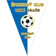
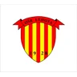

Posledný zápasU13 · IV. liga mladších žiakov U13, 9. kolo
 TJ Družstevník Rišňovce (domáci)
TJ Družstevník Rišňovce (domáci)Výsledok 2:5
 Výčapy-Opatovce U13 (hostia)
Výčapy-Opatovce U13 (hostia)· Štadión TJ Rišňovce · výhra
Návrh webu · nie je to oficiálna stránka klubu
IV. liga mladších žiakov U13 · 6. miesto z 11 · tréner Michal Šiška
Posledný zápasU13 · IV. liga mladších žiakov U13, 9. kolo
TJ Družstevník Rišňovce (domáci)Výsledok 2:5
Výčapy-Opatovce U13 (hostia)· Štadión TJ Rišňovce · výhra
3–1–5výhry, remízy, prehry · skóre 26:50
IV. liga mladších žiakov U13
| # | Tím | Z | V | R | P | Skóre | B |
|---|---|---|---|---|---|---|---|
| 1 |  ŠK Veľké Zálužie | 9 | 8 | 1 | 0 | 75:18 | 25 |
| 2 | 9 | 7 | 0 | 2 | 47:22 | 21 | |
| 3 | 9 | 7 | 0 | 2 | 67:36 | 21 | |
| 4 | 9 | 6 | 2 | 1 | 39:13 | 20 | |
| 5 | 9 | 4 | 1 | 4 | 40:34 | 13 | |
| 6 | 9 | 3 | 1 | 5 | 26:50 | 10 | |
| 7 | 9 | 3 | 1 | 5 | 40:39 | 10 | |
| 8 | 9 | 2 | 2 | 5 | 35:24 | 8 | |
| 9 |  OŠK Lehota | 9 | 1 | 0 | 8 | 17:94 | 3 |
| 10 | 9 | 0 | 0 | 9 | 13:69 | 0 | |
| 11 | ŠK Magnus (futbal) | 0 | 0 | 0 | 0 | 0:0 | 0 |
Hráči, ktorí v roku 2026 nastúpili alebo boli v nominácii (Sportnet). Pri mládeži len mená.